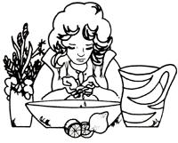
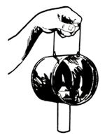
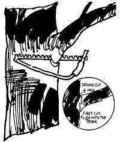

Here are a few more of THE Mother Earth News syndicated features which have appeared in 100+ newspapers over the past six years.
Some of the classic beauties of the ages have used lemons to cleanse, soften, and bleach their skin. Now that naturally grown and organic cosmetics are again in vogue, you may want to try one or two of the ancient formulas.
A refreshing facial that's said to soften tanned skin and gradually remove blackheads, roughness, and freckles is easily made by mixing the juice of one lemon with one teaspoon of water. Dip a small piece of sterile cotton into the solution and wash your face and neck well in the evening. Use a pressing motion under and around the eyes and a rotating action over the rest of your face. Let the treatment dry, leave it on overnight, and rinse the lemon juice away with cool water the next morning.
It's also claimed that a lemon-milk mixture will whiten and soften the hands and face and that pure lemon juice rubbed into the scalp is an effective treatment for dandruff.
I'm sure you know what a lightning bug is . . . but have you ever seen a lighting bug:' Maybe so, maybe not. At any rate, Jim and Caryn Riggs never had, until they moved into a one-room log cabin in the forested foothills of southwestern Oregon's Cascade Mountains. There, an old-timer who's lived on a mining claim for 25 years introduced the Riggs couple to such a "bug".
Actually, the device is pretty simple. Take an old-style one-pound coffee can (the flat kind), a 14-ounce tobacco tin, or a one-pound lard can and place the container on its side. Then punch one hole through the rim at the front and a couple more directly across at the back edge. Fashion a section of coathanger or a similar sturdy wire into a handle and hook it to the can. Finally, make two cuts, each 1-1/2-2 inches long, in an "X" pattern right in the middle of the "bottom" of the implement. (Use a sturdy pointed knife to form the "X". )
OK. Now gently shove a fat utility candle through the center of the cross from the outside to the inside, so that it extends an inch or two into the container. The points of the metal will hold the candle firmly in place.
Light your "bug", walk out into the dark, and you'll be pleasantly surprised at the amount of even illumination it throws. The little waxed flame will bravely shine on through rain or snow and will even withstand an incredible amount of wind. As it burns down, just push the candle up from time to time until the stub is too short for the bentin prongs to grip . . . and insert another candle.
To prevent a limb from peeling down the side of a tree as it's removed, saw partway through the branch from the underside first. Make your upward cut cl ose to the trunk and about onethird of the way through. Then start a second cut on top of the limb about onehalf inch farther from the trunk than the first cut. When you have sawed down almost to the undercut the limb will break away cleanly.
|
 |
 |
 |